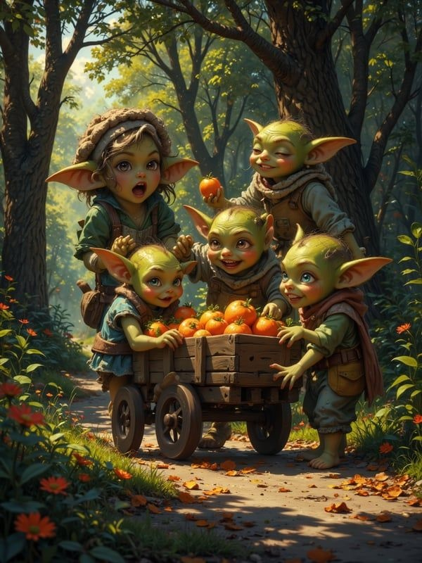
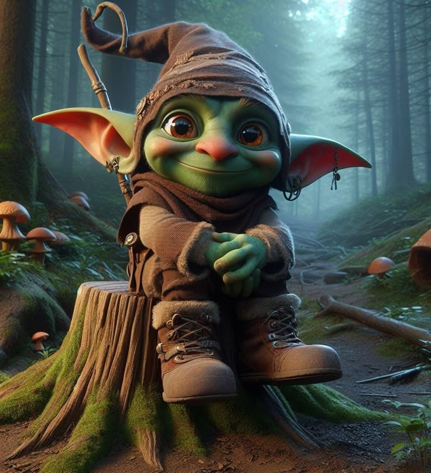
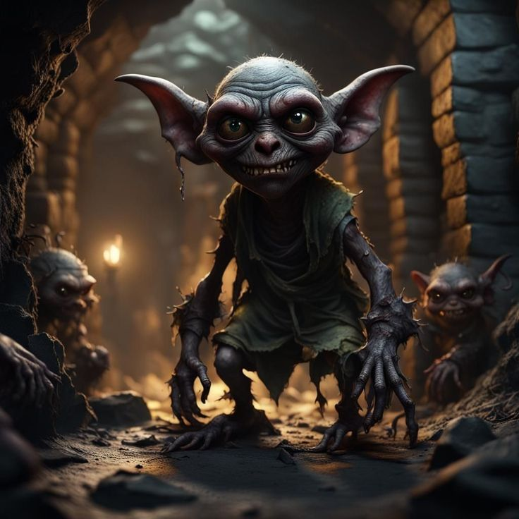
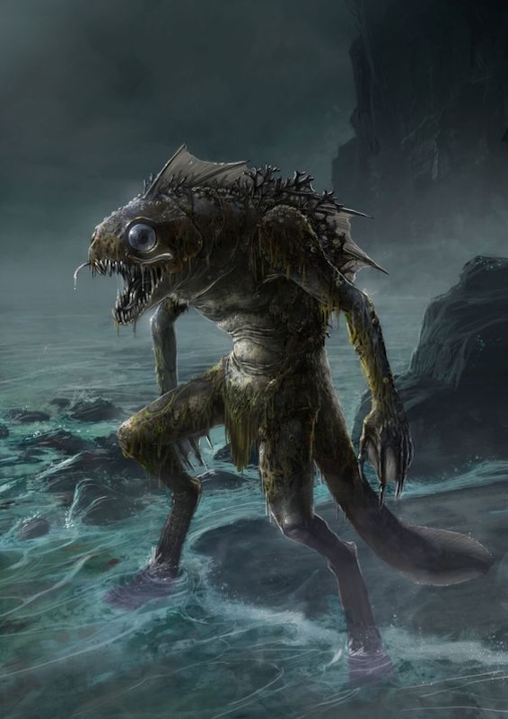
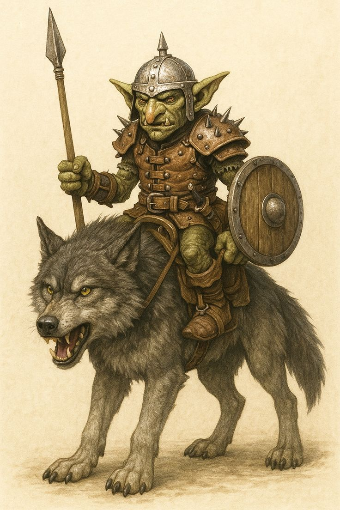
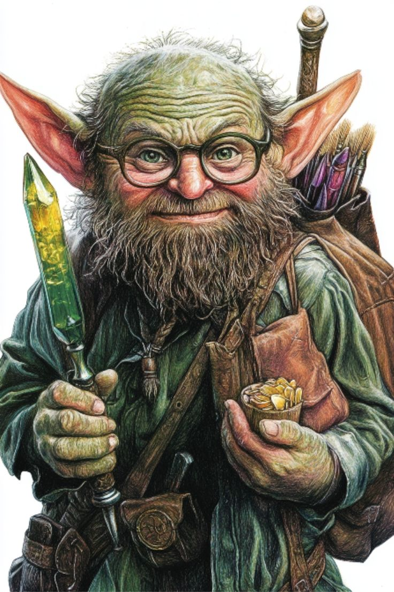
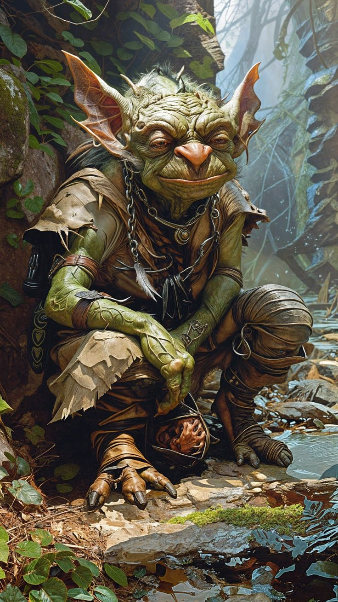
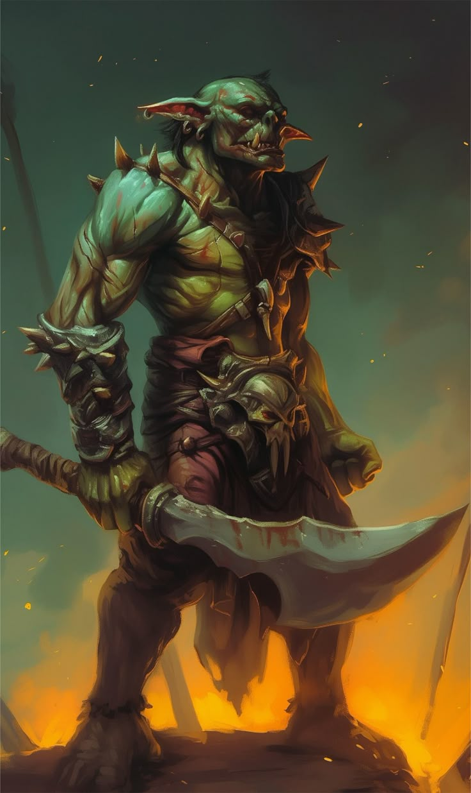

Goblins domésticos
Los goblins domésticos son pequeñas criaturas que viven ocultas dentro de las casas. Pueden ser serviciales y proteger el hogar, pero si se sienten ignorados o maltratados, causan travesuras y desorden. Son impredecibles, pero profundamente ligados al ambiente humano.

Goblins de bosque
Los goblins de bosque habitan entre árboles densos y zonas sombrías. Son rápidos, escurridizos y expertos en camuflarse. Protegen su territorio con engaños y pequeñas trampas, prefiriendo molestar antes que atacar.

Goblins de mina
Viven en túneles profundos y cavernas subterráneas. Son maestros en excavar, detectar minerales y crear trampas ingeniosas. Suelen evitar la luz y conocen cada rincón de las minas mejor que cualquier humano.

Goblins marinos
Criaturas anfibias que habitan costas rocosas y aguas frías. Surgen en leyendas nórdicas como seres sigilosos, curiosos y a veces peligrosos, capaces de arrastrar objetos y presas bajo las olas.

Goblins de guerra
Criados para el combate, son más fuertes y agresivos que otros goblins. Se organizan en escuadras y suelen ser invocados o comandados por hechiceros y líderes oscuros para luchar en batallas brutales.

Goblins sabios
Raros y enigmáticos. Poseen gran inteligencia y guardan conocimientos antiguos que pocos comprenden. Se les busca para obtener consejo… aunque sus respuestas suelen ser crípticas.

Goblins grotescos
Criaturas deformadas por magia oscura. Son impredecibles, violentos y temidos incluso por otros goblins. Su presencia suele anunciar corrupción y peligro.

Hobgoblins
Más grandes y fuertes que los goblins comunes. Siguen un rígido sentido del honor y la disciplina, lo que los convierte en líderes naturales dentro de sus clanes.
